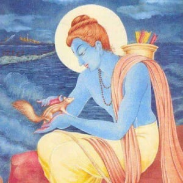

Chapter 1:When stones floated !
Lord Shri Ram was going to Lanka to bring back Mata Sita. He had to cross the sea to reach Lanka. The Vanarsena was engaged in constructing a bridge over the sea. The vanars were trying to build a bridge by placing stones on water. But as soon as the stones were kept in the water, they sank because the stones were very heavy. This happened for some time. No one could understand how to build a bridge out of these stones. Hanuman ji was also watching all this. Hanuman ji could not stop himself. He bowed to Lord Shri Ram and wrote ‘Shri Ram’ on a stone and placed it in the water. On writing the name of Prabhu Shriram, the stone started to float. On seeing this the Vanarsena started to hail “Jai Shri Ram” and a wave of joy ran through the depressed Vanarsena. On this, Lord Shri Ram said, “this miracle has happened due to your devotion, nothing has happened because of me.”
The monkeys said, “How shall we accept it, that it is due to our devotion? O Lord, this has happened because of you.” Then Lord Shri Ram said, “Let me conduct a small experiment. I will put this pebble into the water. If it floats, I will accept that the stones are floating because of me.” Then Lord Shri Ram put that pebble in the water. The pebble promptly sank. Hanumanji, who witnessed this, said, “The stones on which the name of Lord Shri Ram is written, they floated. But if the stone has been relinquished (given up) bu Shri Ram Himself, how can it possibly float?” This teaches us the important lesson that ‘The lord’s name is greater than God Himself !’ This means, His name is mightier than Prabhu Shriram, because Shri Ram may not be present with us, but His name provides bliss to the devotees, means, it helps us cross the ocean of worldly existence. The stones on which Lord Shri Ram’s name was written floated, and the stone dropped by Lord Shri Ram into the water sank, because Shri Ram was not written on it.
Chapter 2:Contribution of the squirrel in building the Ram Setu
 This was the time, when Shriram was going to Lanka to rescue Sita Mata who was held captive by Ravana. He reached the seashore with the vanarsena. The only way to reach Lanka was to cross the sea. But crossing the sea was difficult. There was no means to cross such a big sea to reach Lanka. Shriram prayed to the Samudra dev (God of the Seas) to give way so that they could reach Lanka. But Samudra Dev did not pay heed to the prayer. Three days passed by. Shriram was angry on Samudra Dev as He had not given the way. Hence Shriram decided to evaporate the sea, so He took His Agni Astra and pointed it at the sea. Seeing this Samudra Dev appeared. He apologised to Shriram. Shriram was merciful. He forgave Samudra Dev. Samudra Dev suggested that the vanarsena should build a bridge of stones to reach Lanka. Vanarsena and Hanuman decided that they would build the bridge with stones and cross the sea. Each and every monkey wrote Shriram’s name on the stones and started immersing the stones in the sea, while chanting the Lord’s name. The stones with Shriram’s name written on them started floating and within a few days the bridge was completed. While all the monkeys were building the bridge, a small squirrel was watching them. The squirrel thought that Shriram is an incarnation of the Supreme Lord himself. The monkeys are building a bridge for Him. This a form of service to Shriram, even I should contribute in this mission. With this thought the squirrel bowed down to Shriram’s feet in its mind and started doing its service. There was a heap of sand near the seashore. The squirrel would go to the heap of sand, and with its tiny hands and tail, it would collect small stones and sand and put them into the sea. It was trying to serve Shriram to the best of its abilities. Seeing this monkeys were surprised. One of the monkeys went up to the squirrel and asked “You are so small and you are putting grains of sand into the sea, do you think that the bridge would be built by you doing so?” The squirrel replied, “Brother, I may not be able to lift big stones or do as much service you are doing, but with whatever ability Shriram has given me, accordingly I can do a little service. You might find my services small, but a service to the Lord is being rendered. Please let me do my service.” Saying so the squirrel went back and began putting sand in the sea. The squirrel was tired after some time. But it ignored its tiredness and continued the service without stopping. It thought, ‘till there is life in my body, I will serve Shriram’. While it was again taking sand towards the sea someone looked at it with a lot of love. Children can you tell me who this was? It was Shriram Himself. He saw the squirrel and picked it up in His hands. Shriram affectionately put the fingers of His right hand on the tiny squirrel’s head and said, “Even though you are small, you have served me very well. I am very happy”. Listening to Shriram’s words, the squirrel was filled with gratitude. At that time, the impression of Shriram’s fingers appeared on the squirrel’s back. Children, the marks that we see on the back of a squirrel is actually the impression of Shriram’s fingers. Shriram told the squirrel, “Whoever serves me like the way you have, will always have My blessings and will never have scarcity in their life”. Children, what did we learn from this? We learn that whenever we are serving God there is no differentiation between big or small. All that matters is that we should have the will to serve the Lord, and with what emotion we are serving Him. The squirrel was very small and alone but because of its dedication and emotion to serve the Lord it received Shriram’s grace. If we receive the Lord’s grace we don’t have to worry about anything. So we saw how we can receive the Lord’s grace, how the squirrel received the Lord’s grace, how we will certainly receive the Lord’s grace when we serve the Lord, even if our service is small like the squirrel. Children, to serve means, that we do what the Lord likes, take part in the God’s mission. This is serving God.